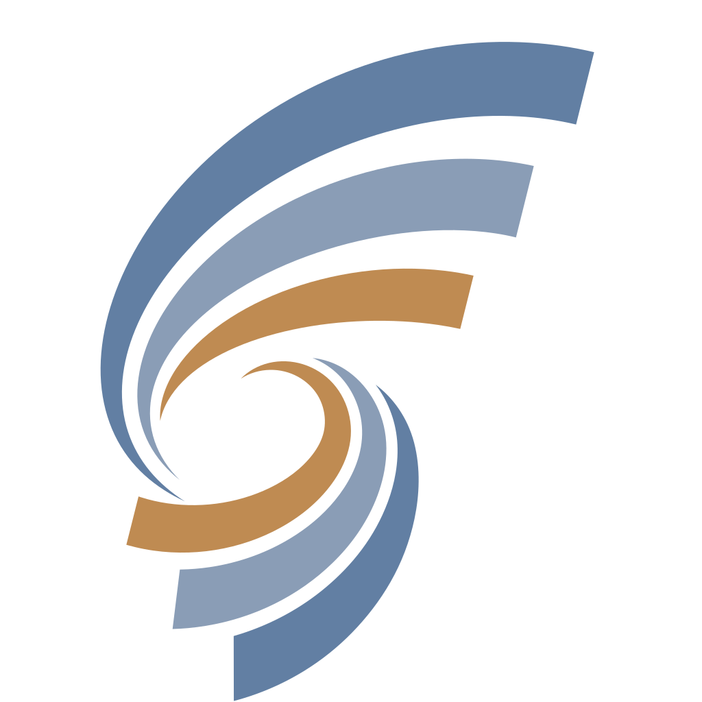

Da dove cominciamo?
Registra un riferimento a un file GGUF compatibile sul computer.
La personalizzazione avviene interamente sul dispositivo, senza inviare dati all’esterno.
Conversazioni, impostazioni e riferimenti ai modelli.
API Ollama o compatibili con OpenAI, su questo computer o su un’altra macchina.
Stato, risorse ed errori del motore, senza contenuti delle conversazioni.
Spazio di lavoro personale con intelligenza artificiale.